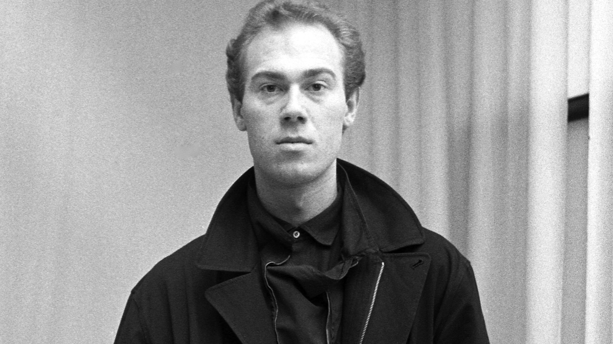
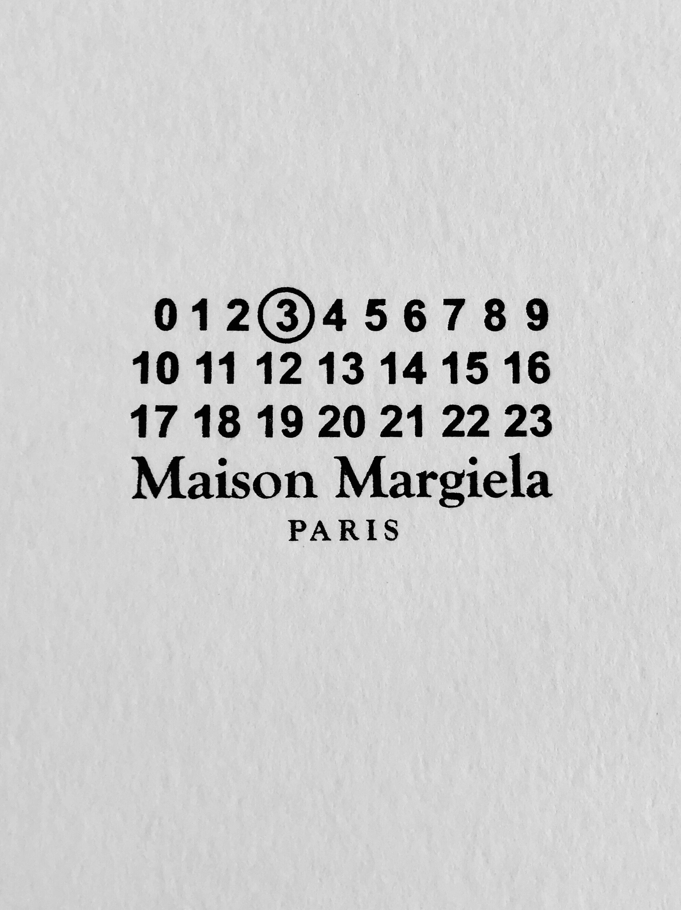

Martin Margiela was born in Genk, Belgium, in 1957. He studied fashion at the Royal Academy of Fine Arts in Antwerp. After graduating, he worked as a freelance designer before joining Jean Paul Gaultier's studio in Paris.

01 / Home
Martin Margiela
Martin Margiela is a Belgian fashion designer, artist, and founder of the French luxury fashion house Maison Margiela. He is considered to be one of the most influential fashion designers in recent history for his iconic deconstructed, upcycled aesthetic and oversized silhouette.
02 / Early Life
Early Life
03 / Fashion Career
Fashion Career
In 1988, Margiela co-founded Maison Martin Margiela with Jenny Meirens. His collections challenged traditional ideas of luxury through deconstruction, repurposed materials, and unconventional silhouettes.

04 / Beyond Fashion
Beyond Fashion
After leaving the fashion industry in 2009, Margiela continued exploring his artistic practice. His work extends into sculpture, installation, painting, and other forms of visual art.